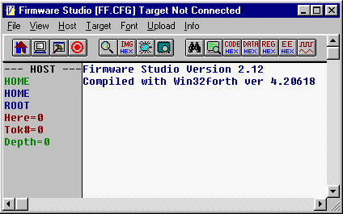
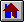
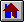

| Host | Builder | Tester | Tokenizer | Forthing |
After starting Firmware Studio, on the left side of the screen you'll see the search order along with the contents of the data stack. The current vocabulary is in green, and the search order is in blue. There are several modes of operation, many of which place a special vocabulary (colored gray) at the top of the search order.
Forth uses a simple syntax consisting of keywords separated by spaces. An interpreter parses keywords from an input stream such as the console or a file. Firmware Studio has a number of different interpreters. They are used for normal Forth evaluation, building executable ROM code, tokenizing source code and interactive testing of the target board. Although they differ in function, the principle of operation is the same for all of them.
Host Interpreter
|  |
Startup defaults to the HOST interpreter. This is the normal
Forth interpreter, which you can get to anytime by pressing the
HOST button  or F7.
To clear the search order, press the HOME button  or F8. Press F1 to get a list of hot keys.
or F7.
To clear the search order, press the HOME button  or F8. Press F1 to get a list of hot keys.
The search order and some parameters are displayed in the left margin. Here displays the next free byte in the target image. Normally, this is the next free ROM byte. RAM changes the action of Here, making it return the next free RAM byte. ROM changes it back. Tok# is the next available token number. It's used when building ROM code. Depth is the stack depth, and any stack data will be displayed under Depth.
The HOME vocabulary has all of the words you're likely to use, including Forth's CORE and CORE EXT words. The source file HOME.G contains these words. In the event you need to access more (such as floating point), you can enter ALSO FORTH to put the huge Win32forth vocabulary as well as Firmware Studio's internal words in the search order.
The interpreter goes through the search order looking for each blank-delimited string. When it finds a word in the dictionary, it either executes it or appends its semantics to the dictionary. Inside a definition, the word's IMMEDIATE flag will cause execution it's set. If the word isn't found, it's converted to a number and pushed onto the stack. This is typical Forth evaluation. If you're not up to speed on basic Forth, read the literature at www.forth.org before continuing.
The green name in the left margin is the CURRENT vocabulary. Any new definitions will go into this vocabulary. This vocabulary isn't part of the search order.
When target vocabularies are in the search order, you must understand that they may mask desired operations in the HOME vocabulary. For example, if the target vocabulary CORE contains DUP then that DUP will execute instead of the DUP in the HOME vocabulary. Words in a target vocabulary have no stack effect. They set a couple of global pointers for use by various interpreters.
An easy way to avoid this problem is to place the code to be interpreted inside of {{ }} brackets. {{ switches to the HOST interpreter (regardless of which one is in use at the time) and puts the HOME vocabulary on top of the search order. }} restores the interpreter. {{ and }} can be used any time you want to do operations on the stack and you're not in HOST mode.